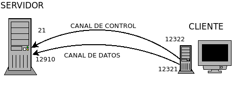

7.1.1. Descripción teórica¶
A diferencia de la mayoría de protocolos cliente-servidor en que se establece un único canal de comunicación, en el protocolo FTP se establece dos canales distintos:
- Canal de órdenes
Es el que permite al cliente hablarle servidor y realizar las peticiones.
- Canal de datos
Es aquel a través del cual se transmiten los datos (p.e. un fichero o el listado de ficheros disponibles en el servidor)
La existencia de estos dos canales supone que tanto en cliente como servidor deban existir sendos procesos:
- Proceso de transferencia de datos (DPT),
que se encarga de gestionar la conexión de datos.
- Intérprete de protocolo (PI),
que permite el control del protocolo mediante los comandos que se envían al servidor.
7.1.1.1. Modos de conexión¶
Cuando se inicia la conexión, el PI establece conexión con el puerto 21/TCP del servidor de un modo semejante a como lo hace el protocolo telnet. Gracias al PI, el cliente es capaz de enviar órdenes al servidor, pero, cuando se requiere la transferencia de datos, es preciso abrir un canal de datos para llevarla a cabo. Dependiendo de cómo se abra este segundo canal, se definen los dos modos de funcionamiento:
- Activo
En este modo es el propio servidor el que abre el canal de datos desde su puerto 20/TCP hacia un puerto aleatorio del cliente que éste previamente le ha comunicado por el canal de órdenes mediante el comando
PORT:
- Pasivo
El modo se activa si el cliente envía un comando
PASVal servidor, lo que origina que el servidor le comunique al cliente un puerto no reservado al que puede conectarse para establecer el canal de datos. Con ello, el cliente abre este segundo canal utilizando en su lado el siguiente puerto al que usa para el canal de órdenes y en el del servidor, el pruerto que este le comunicón:
7.1.1.2. Transferencias binarias y de texto¶
La forma en que se codifica el cambio de línea en los ficheros de texto, depende del sistema operativo1:
En los sistemas UNIX se representa con el carácter
\n(código 10 ASCII).En los sistemas MacOs (anteriores a su conversión en sistemas UNIX), el cáracter
\r.En los sistemas windows, los caracteres
\r\n
Para paliar esta diferencia, el protocolo FTP definió dos tipos de transferencia de ficheros:
- Transferencia binaria,
que es aquella que no hace ninguna transformación sobre el contenido del fichero.
- Transferencia de texto,
que es aquella que hace sustituciones sobre los caracteres que indican el cambio de línea, a fin de que en servidor y cliente este se codifique de la manera correcta. De este modo, si desde un cliente windows se sube a un servidor UNIX un fichero fijando la transferencia como de texto, todas las secuencias
\r\nse convertirán\nen su copia en el servidor.
Notas al pie
- 1
En las antiguas máquinas de escribir pasar a la siguiente línea suponía un cambio de línea (“n”) yy un retorno del carro (“r”) a su posición inicial.